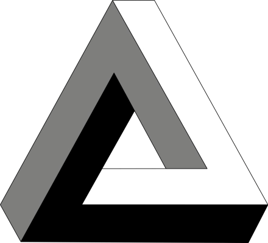
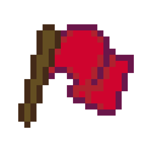

W A S D
四方向移动GameManager.SIZE = 64 px
W 上、A 左、S 下、D 右，每次走一格。角色用 RayCast2D 试探前方， 有墙就走不动——这是唯一"守规矩"的移动方式。
> boot_splash Objects/Triangle/Triangle.png · engine Godot 4.3 · build 1.0.0.0
一款不依赖直觉的俯视像素解谜。二维成立，三维冲突——捡起字母牌， 按下它，角色就沿着那条"不存在"的路径走过去。


不可能物体是在现实世界中，不可能客观存在的事物，
只会在二维世界存在的一种图形。
这些图形通过"欺骗"大脑的透视处理机制，
展现了二维与三维逻辑的冲突。
——以上为设计文档《UnReal Objects.md》的开篇原文。
游戏把这段文字做成了可以走进去的棋盘格：格子是二维的，走法却按三维空间写。
// 03 · HOW TO PLAY
走格子用 W A S D · 撤销用空格 · 动作牌用对应的字母键
W 上、A 左、S 下、D 右，每次走一格。角色用 RayCast2D 试探前方， 有墙就走不动——这是唯一"守规矩"的移动方式。
输入映射名为 uodo，按下后调用 player.undo()，
把刚才那一步整段倒放回去。动作牌走得越长，撤销倒放得越久。
源码中保留的 debug 输入映射，用于直接灌入预设动作列表，
跳过拾取流程。相关代码目前处于注释状态。
地图上散落着字母牌，走上去即拾取。每个字母被绑成快捷键，按下后角色 依次执行它记录的一串方向命令——这是唯一能走出"不可能路径"的方式。
// 04 · FLOORS
Maps/0.tscn – Maps/4.tscn · 展开一层看它的机制、可用牌与提示原文
整个地图只有两块动作牌：A（Left+1）与 D（Right+1），起点在 (416, 352)。 这是让玩家先理解"按字母 = 走一步"的入门格。
"通常你不会在这里，除非有 bug"0.tscn 内唯一的提示区域（L215-216）
四张基础牌 A / D / S / W 组成最初的四个方向，本关共 11 个提示区域，
一路教到"秘密通道"。Flag2 是隐藏终点，star_flag = 1，位置 (1248, -96)
—— 在地图边界之外，只能靠违背直觉的位移抵达。
"站着！我让你动了吗！？" → "哇，秘密通道" → "空格 撤消上一步"1.tscn 提示序列（L237-288）
牌组换成 Q（上1左1）、T（右3下1）、J（下3左1）与 D。
三个"斜向"动作让格子上的前后关系开始打架，13 个提示区域一路追问同一个问题。
隐藏终点 star_flag = 2 在 (2336, 1312)。
"刚才你为什么不直接向左走呢？" → "我觉得你可能被骗了" → "死路一条"2.tscn 提示序列（L237-298）
本关有 N（上1右1下1）、G（左1下2右3上4）、U（下1左2上2）与 S。
G 与 U 的长串命令会绕一圈回到附近，正是"无限循环阶梯"的机制化身。
隐藏终点 star_flag = 3 在 (1120, 800)。
"看，两个终点" → "猜猜你为什么总是见我？" → "哈哈哈"3.tscn 提示序列（L237-273）
唯一带敌人的关卡：14 个红色的 Dust（"恶魔"）每 5 秒随机朝一个空方向走一格，
碰到玩家即判负。可用牌为 A / E / I / O / Q / Z，其中 Z 是"右1左1右1"
——一次净位移一格，但中途的往返让追击者算不准。
隐藏终点 star_flag = 4 在 (416, -608)。
"当心魔鬼" → "那边有很多恶魔" → "感谢游玩 （2025.3.30 by Gove）"4.tscn 提示序列（L252-298）
// 05 · 14 ACTIONS
Actions/Tres/*.tres · 每条命令对应 player.gd 中的一次 64 像素位移
// 06 · CATALOG
Objects/ 目录下的四份素材 · 定义引自设计文档原文 · 点图让它转一圈
// 07 · MEDIA
点击任意一张放大 · Esc 关闭
// 08 · BUILD LOG
摘自设计文档「三. 开发日志」，仅提炼实现层面的节点
2025.03.28 · 22:00
立项。展开想象、设计游戏、新建项目；一小时内搭出简易 UI，随后继续打磨 UI 与玩法雏形。
2025.03.29 · 09:30
框架与命令模式。搭建整体游戏框架、实现命令模式（也就是今天页面里这套"动作牌 → 命令串 → 逐格位移"的结构）；下午完成 Player 动画逻辑，随后制作更多可拾取物。
2025.03.29 · 20:30 – 23:00
关卡落地。完成前两关的设计和搭建，当晚又完成第三关；夜里做细节调整、加入提示。
2025.03.30 · 15:30
第四关。设计、制作并测试第四关——也就是唯一带 14 个"恶魔"的追逐关；随后增加并修改提示互动。
2025.03.30 · 21:30 – 23:00
双语与导出。实现中英双语文本（页面上这些提示语的原文都来自 Ctip_str / tip_str 两个字段），23 点后开始导出调试。
2025.03.31 · 13:30
发布。研究上传游戏，作品上线 itch.io。作者落款：Thanks for playing! — 2025/3/31 By Gove
// 09 · TECH
全部取自 project.godot、export_presets.cfg 与 player.tscn
// 10 · CREDITS
引自设计文档「四. 素材来源」与「五. 作者的话」
一款解谜的游戏, 一些不存在的物体。